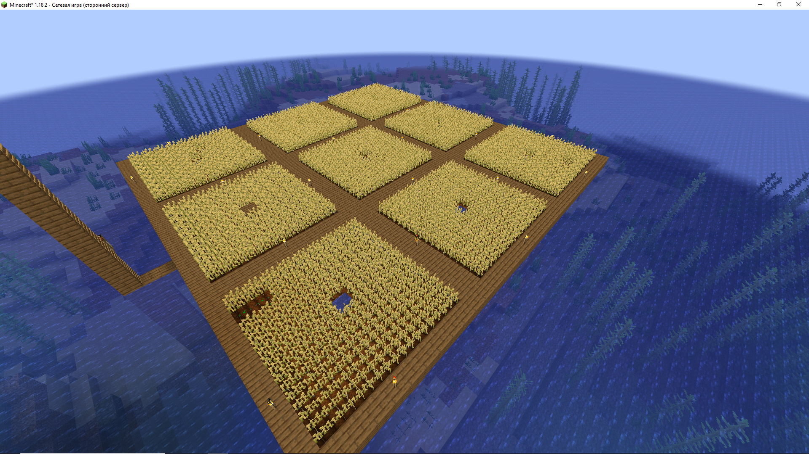

Состояние сервера
Текущий IP: 127.0.0.1
Модификации
Дни рождения
Статистика
Команда существует: Загрузка...
Администрация: Загрузка...
Участников: Загрузка...
Информация о сервере
Кланы
Апостолы Догхауса

Клан "Апостолы Догхауса" — это уникальное объединение, состоящее исключительно из преданных поклонников лудизма. Их философия основана на восхвалении азартных игр как искусства, где каждый ход и каждая ставка становятся частью великой игры жизни. Члены клана живут в стенах, чтобы быть ближе к своим врагам, наблюдая за ними и изучая их слабости. Эта скрытность позволяет им планировать свои действия с максимальной эффективностью и жестокостью, нанося удары в самый неожиданный момент. Они превращают каждую игру в стратегическую битву, где знание противника становится ключом к победе. Во главе клана стоит мудрый правитель с гордым именем Zombak1337, который ведет своих последователей к новым вершинам азартных приключений. Его проницательность и опыт в мире игр делают его незаменимым лидером, а его советы и стратегии становятся путеводной звездой для всех членов клана. "Апостолы Догхауса" — это не просто клан, это сообщество единомышленников, которые ценят азарт, стратегию и, конечно же, дружбу, основанную на общей страсти к играм.
- Zombak1337
Роли
| Участник | Роль |
|---|---|
| N/A | N/A |
| N/A | N/A |
Постройки
Дом George_Goodman
На данный момент это самый большой дом сервера
- [x:96, y:108], overworld
- George_Goodman
Дом zavnes
Милый небольшой домик
- [x:150, y:83], overworld
- zavnes
Ферма George_Goodman
Единственная ферма на сервере
- [x:79, y:99], overworld
- George_Goodman